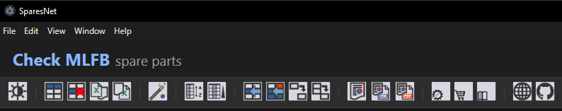
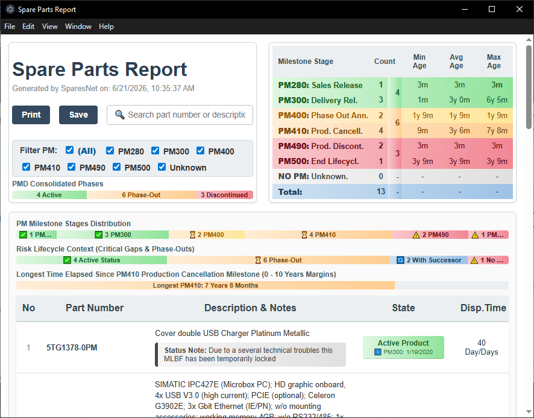

SparesNet este o aplicatie portabila, scrisa in NodeJS, pentru evaluarea stadiului ciclului de viață și disponibilitatii produselor de automatizare Siemens Industry pe baza codurilor de produs (MLFB).
Inspirata de mai vechiul utilitar Excel bazat pe macro VB (SparesWeb.xls, nefunctional pe noul Sieportal), SparesNet ofera o interfata moderna bazata pe Electron/Vite/Puppeteer si tabele compatibile Excel.
Interface Description

- Clear All: Stergere a tuturor datelor din tabel.
- Clear Data: Stergere a datelor din tabel, cu exceptia codurilor de comanda (prima coloana).
- Import from Excel: Import date dintr-un fisier Excel existent (doar din sheet 'Data', daca exista, sau din primul sheet daca nu).
- Export to Excel: Export date intr-un nou fisier Excel.
- Read All with successors (Wizard): Sortare date dupa cod MLFB, citire date pentru toate randurile, verificare disponibilitate si extragere date pentru succesori, generare si afisare a unui raport.
- Sort by MLFB: Sortare randuri dupa cod MLFB.
- Sort by Column: Sortare date dupa coloana selectata.
- Read Row: Citire date de pe internet doar pentru randul selectat.
- Read All: Citire date pentru toate randurile (fara verificare succesori).
- Successor for Row: Verificare a disponibilitatii unui succesor pentru codul de pe randul actual, inserare in tabel, daca nu exista deja si actualizare date pentru acesta.
- Successor for All: Verificare a disponibilitatii succesorilor pentru toate codurile, inserare in tabel, daca nu exista deja si actualizare date pentru noile coduri.
- Preview report: Generare si afisare a unui raport HTML pentru datele din tabel.
- Export report to HTML: Generare si salvare a unui raport HTML pentru datele din tabel.
- Export report to PDF: Generare si salvare a unui raport PDF pentru datele din tabel.
- Spares On Web: Link rapid la pagina Siemens Spares on Web (SOW) corespunzatoare codului de pe randul actual.
- Industry Mall: Link rapid la pagina Industry Mall corespunzatoare codului de pe randul actual.
- SIOS: Link rapid la pagina Siemens Industry Support (SIOS) corespunzatoare codului de pe randul actual.
Ghid rapid de utilizare
Completati in prima coloana codurile MLFB (codurile de comanda) corespunzatoare pieselor pentru care doriti informatii. Codurile pot fi completate manual, cu Copy-Paste dintr-un tabel Excel sau LibreOffice-Calc existent sau importate dintr-un fisier Excel existent.
Dupa completarea primei coloane cu codurile dorite, dati click pe Read All with successors (Wizard). Aplicatia va sorta codurile, descarca datele de pe paginine web corespunzatoare, identifica eventualele coduri pentru produsele declarate succesoare ale produselor din lista, descarca date si pentru acestea apoi va genera si afisa un raport referitor la disponibilitatea pieselor.
Raport
Aplicatia poate genera un raport, in format HTML sau PDF, cu o vedere generala rapida a procentului de piese aflate in fiecare etapa de viata. Mai mult, ofera si un indicator visual al disponibilitatii succesorilor si a timpului scurs de la scoaterea din fabricatie a celei mai vechi piese.
